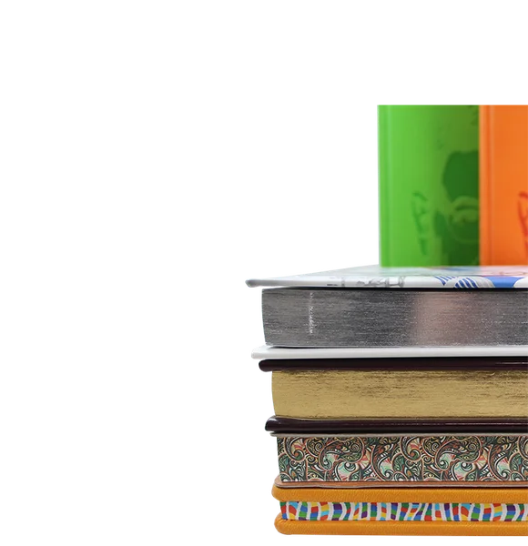
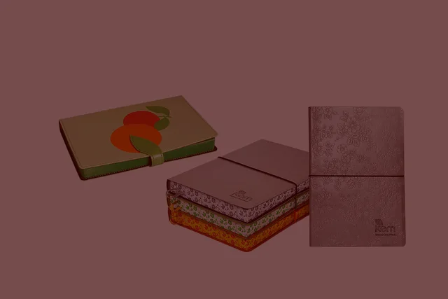
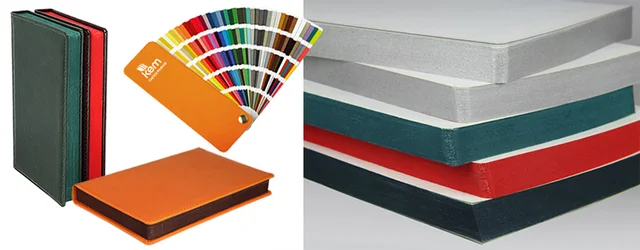
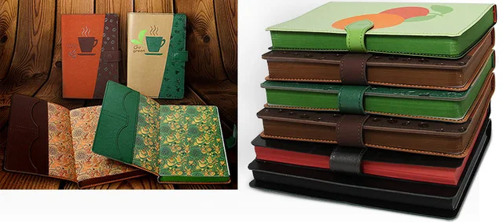
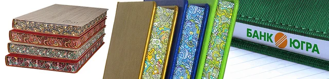
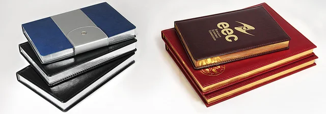

Отделка срезов блока
Многие из нас заметили новую тенденцию в издании ежедневников, блокнотов и другой полиграфии – окрашенные в яркие цвета боковые срезы.

Золочение и серебрение
Такое исполнение очень оживляет изделие, придает ему нарядность в случае выбора ярких цветов или добавляет штрих законченности и продуманности дизайну более строгих изделий. Окрашивание среза возможно в любой цвет, цвет можно выбрать по пантонному вееру. Можно использовать в том числе и пантонные краски с небольшим металлизированным эффектом(как альтернативу привычному серебрению и золочению, но эффект будет гораздо более сдержанным). Просим учесть, что по технологии быстрого нанесения краски на блок строгого попадания в пантон добиться очень трудно, но тон будет очень близким, и незначительное отличие от выбранного пантона на взгляд неспециалиста будет незаметным. Возможно окрашивание как обычных прямых блоков, так и блоков со скругленными углами.
С точки зрения дизайна Вы можете либо выбрать окрашивание среза в общей тональности ежедневника, в одном цвете или чуть светлее или темнее обложки, либо сыграть на контрасте – например, сделать красный срез при черном или коричневом переплете. В последнее время большим спросом, например, пользуются ежедневники с черным переплетом и черным срезом.
Благодаря нашей новой технологии окрашивания срезов мы можем изготовить большие партии ежедневников и других изданий в кратчайшие сроки – на окрашивание даже тиража в 1000-2000 экземпляров уйдет не больше двух дней. Мы рассчитываем очень широко применять окрашивание срезов в одну краску в нашей дальнейшей работе. Ведь и по скорости выполнения, и по цене эта опция достаточно привлекательна. Выбор окрашенного среза придаст неповторимый шарм Вашим ежедневникам (или другой печатной продукции) и выделит их из массы однотипных изделий. По поводу стоимости ежедневников и другой полиграфии с окрашенными срезами Вы можете отправить запрос с сайта, позвонить или отправить нам сообщение.
Этот вариант окрашивания срезов дает более насыщенный и равномерный цвет среза. Возможна печать любых изображений, узоров, или, например, логотипа компании. Печать на срезе возможна на одной стороне, на двух или на трех. Соответственно меняется стоимость изделия. Операция по нанесению полноцветного изображения на срез более трудоемкая (на партию в 100 ежедневников может уйти целый день), поэтому ее стоимость несколько выше тонирования в одну краску.
Эта технология уже стала традиционной. Однако когда необходимо придать нотку изысканности или подчеркнуть статус изделия, опция золочения или серебрения среза по-прежнему незаменима. Такую отделку используют для ежедневников, еженедельников, а также важных корпоративных изданий, книг.
По вопросам стоимости отделки обрезов блоков обращайтесь к нашим менеджерам
По телефону: +7 (499) 280-80-11
По E-mail: sekret@a-kem.ru
Материалы и образцы
 Каталоги в PDF
Каталоги в PDF  Детские книги
Детские книги 

Отделка срезов блока

Отделка срезов блока

Обрезы, тонированные в одну краску

Цветные срезы ежедневников

Полноцветная печать на срезе, CMYK

Серебрение и золочение обрезов - ежедневников, блокнотов, книг